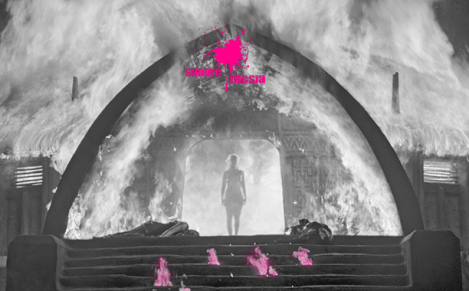

Folclore Fucsia#194
Descripción: Sangre Fucsia dedicado a profundizar en el folclore y las folclóricas, tema que abordamos desde nuestra mirada curiosa, herstórica, fucsia... con la cultura popular como protagonista.
Salidas del armario #195
Descripción: Un Sangre Fucsia que gira en torno a ese rito de paso de la comunidad LGTBIQ+ que es salir del armario, o del closet. Para dar ideas sobre cómo hacerlo, hemos convocado otras voces, voces de amigas y de oyentes bolleras, maricones y bisexuales que comparten su experiencia.

Resurgir #201
Descripción: Celebramos la vuelta a las ondas de Sangre Fucsia. Volvemos cambiadas, con nuevas colaboraciones, también con mucha incertidumbre en el medio de una pandemia.
Rituales Fucsias #203
Descripción: En este programa nos acercamos a los rituales con nuestra mirada fucsia: exploramos el concepto de ritual desde una aproximación antropológica-histórica (y personal). ¡Dale al play y empieza tu ritual fucsia con nosotras!

Señoras qué #202
Descripción: "Señoras que..." es una vuelta de tuerca a las propuestas collage de Sangre Fucsia donde encontrar empotradoras, piratas, críticas, grafiteras, tonadilleras, cotillas... Señoras que hablan de señoras que hacen del mundo que vivimos un lugar mejor.
Maldito dinero #199
Descripción: En estos días de confinamiento, información compulsiva
y pánico al coronavirus, nosotras seguimos con la radio: sin directo, cada una en su casa grabando como podemos. Hoy hablamos de otro virus con el que lidiamos cada día: el maldito dinero.